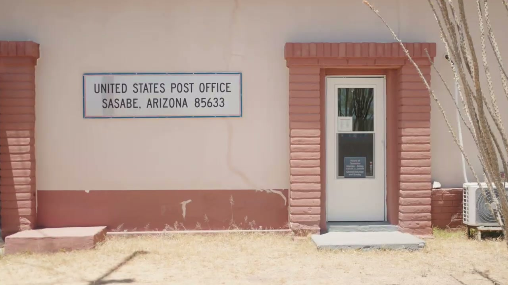
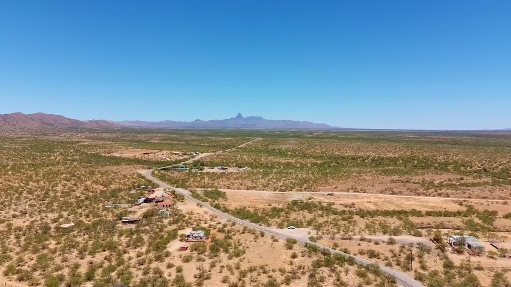

Short answer: no. Sasabe is not a ghost town. But it is easy to see why people ask.
Drive down State Route 286, past miles of open ranch country, and you arrive at a handful of old buildings at the end of the road, right on the border with Mexico. There is no stoplight. There is no grocery store. On a quiet day, you might not see another person. It looks like a place people left behind. The difference is that people never did leave.
What a Ghost Town Actually Is
A ghost town is a place that was abandoned. The mine closed, or the railroad moved on, or the water ran out, and the people left. The buildings sit empty, fall apart, and nobody lives there anymore.
Arizona has plenty of those. Sasabe is not one of them. People still live there. The post office still delivers mail. The border crossing still operates. Ranches around it are still working ranches. A place with residents, a post office, and a working border crossing is a small town, not a ghost town.
How Many People Live in Sasabe?
Very few, and that is where the confusion starts. The numbers depend on what you count.
The 2020 Census counted 51 people in the 85633 ZIP code area, which includes Sasabe. In 2010, the same ZIP code area counted 54 people. That ZIP code covers a large stretch of rural country around the town, including ranches, so it is not just the town itself.
The town itself is smaller than that. A 2011 Arizona Republic report put the number of residents in Sasabe at 11. The history article on this site puts the number of year-round residents in the settlement itself at roughly four. Those are approximate counts of a very small place, not official Census numbers, and the exact number moves around as people come and go.
Either way, the honest picture is the same: a handful of people in the town, and a few dozen more spread across the surrounding ranch country in the same ZIP code. That is small enough to feel empty. It is not the same as empty.
What Is Still There
A ghost town has ruins. Sasabe has buildings that are still part of daily life.

The post office. Sasabe still has a United States Post Office, with its own ZIP code: 85633. Plenty of towns this size lost their post office years ago. Sasabe kept its mail.

The store. The Sasabe General Store sits in a building dating to around 1920. For generations it served local residents, ranch workers, travelers, and hunters passing through the border country. It is the most recognizable building in town, with its old storefront and the gas pumps out front.
The bar. The Hill Top Bar is the town’s bar, a local fixture that has been part of Sasabe for as long as most people around here can remember.
The border crossing. A border crossing has existed at Sasabe since 1916. It is the least-used border crossing in Arizona. In 2011, it averaged about 165 vehicles, trucks, and pedestrians a day. That is quiet for a border crossing, and it is part of why the town feels so still. But a staffed, working port of entry is the opposite of an abandoned place.
People living there. The listing for part of Sasabe includes multiple tenant-occupied residential homes, houses on the property where people currently live as tenants. Around the town, ranches continue to operate across the Altar Valley.
Why It Looks Like One
Three things make Sasabe feel like a ghost town, even though it is not.
First, the size. A town center of a few buildings, with a handful of residents, reads as abandoned to anyone used to a normal town. There is no main street full of shops, because there was never a big town here to begin with. Sasabe was always small.
Second, the quiet. The border crossing is the least-used in Arizona, the road in is long and empty, and the nearest town of any size is miles away. On most days, not much happens in Sasabe, and that stillness looks a lot like a place that time forgot.
Third, the age of the buildings. The store dates to around 1920, the old customs house to 1937, and the whole town center looks like an earlier Arizona. Old buildings in a quiet place are what ghost towns look like. In Sasabe, those old buildings are still standing because people kept using them, not because they were left behind.
What Sasabe Is, Then

Sasabe is a small, unincorporated community in southern Pima County, right on the U.S.–Mexico border. Unincorporated means it has no town government of its own. It is part of Pima County, not a city or a town with a mayor and a council.
It is a ranching community and a border community, and it has been both for more than a century. The land around it is working ranch country. The road through it, State Route 286, still serves those ranches. The town across the border in Mexico, El Sásabe, Sonora, is part of the same place in everyday life, even though a fence runs between them.
So the fair way to say it is this: Sasabe is one of the smallest living towns in Arizona. It is not abandoned, and it is not a ruin. It is just very small, very quiet, and very far from anywhere else.
Part of Sasabe Is For Sale
Part of Sasabe is on the market as a single offering, listed at $3,500,000: approximately 441.59 acres across three parcels, including the historic Sasabe General Store, the Hill Top Bar, and the United States Post Office. The listing went live on July 29, 2026.
If you want to see the place for yourself, that is the honest way to answer the ghost town question. Walk the town center, look at the buildings, and you will see the difference between a place people left and a place where only a few people live.
Frequently Asked Questions
Is Sasabe a ghost town?
No. Sasabe is a small, living community. People live there, the post office is still open, the border crossing still operates, and ranches around it are still working. It looks like a ghost town because it is very small and very quiet, but it was never abandoned.
How many people live in Sasabe?
The 2020 Census counted 51 people in the 85633 ZIP code area, which covers Sasabe and the surrounding ranch country. The town itself has only a handful of year-round residents. A 2011 newspaper report put it at 11 residents, and the history article on this site puts it at roughly four. The exact number is small and moves around.
Does Sasabe have a post office?
Yes. Sasabe has a United States Post Office with its own ZIP code, 85633.
Is the Sasabe border crossing open?
Yes. A border crossing has existed at Sasabe since 1916. It is the least-used border crossing in Arizona, averaging about 165 crossings a day in 2011, but it is a staffed, working port of entry.
Where is Sasabe, Arizona?
Sasabe is in southern Pima County, directly on the U.S.–Mexico border. State Route 286 connects it with State Route 86 near Three Points, approximately 45 miles to the north.
Is Sasabe still for sale?
Part of Sasabe is listed at $3,500,000, and the listing went live on July 29, 2026. Information in this article is current as of November 17, 2026. Contact the listing agent, Nathan Morrison, to make sure everything is still current.
This article is provided for general informational and educational purposes. Details are believed to be accurate, but are not guaranteed and should be independently verified. This article is not intended as legal, financial, or investment advice. All information is believed to be reliable but is not guaranteed. Buyers should independently verify all information, including acreage, improvements, utilities, zoning, boundaries, and permitted uses, during their own due diligence.